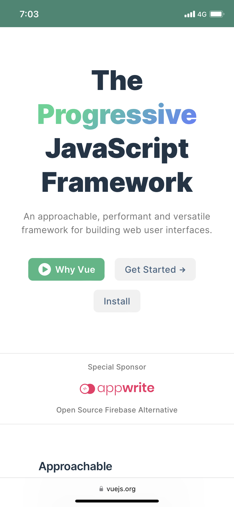

The Vue.js website is an exelent example of color contrast and white space usage. The colors present #767676 , #213547, #42b883 have a contrast ratio of at least 4.5:1 and sometimes above this value when comparing them against the background. They designed this webiste with enough white space between elements so the website content look pleasant and readable.

The Adobe website is an excellent example of repetition usage. They have the same layout, image configuration, colors, and icons emphasizing on what they do and provide to their customers. They created a visual experience making clear what they offer from the beginning.

On this website we can see how alignment plays an important role on how the content is presented and how the final user browse through the page. They used horizontal alignment (When the center, left side, and/or right side of elements align on an invisible vertical line) to display the courses they provide, so the final user can see all of them when scrolling just a little distance.